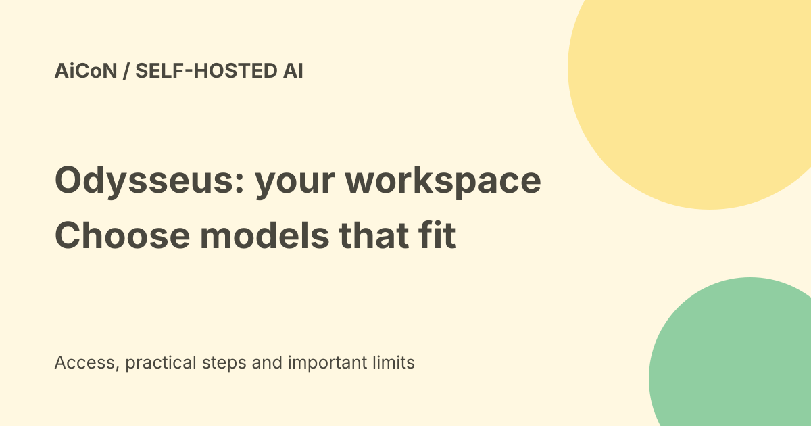

Odysseus AI: a self-hosted workspace with hardware-aware model picks
Odysseus is a free, self-hosted workspace for chatting with models, running agents and working with research, files and other tools. Its Cookbook helps match models to your hardware. You install and maintain the workspace yourself; using a cloud model can still cost money.

What does self-hosted mean?
Odysseus runs on a computer or server that you manage. It is an interface around models and tools, not one AI model. The current repository describes chat, agents, research, documents, email, notes, tasks, calendar and model workflows. Built-in tools include files and shell access, and MCP can connect more tools. MCP is a way for an AI client to call another service.
This can suit people who want control of their setup and are comfortable with a terminal. It is not a maintenance-free phone app. Updates, access settings, backups and model troubleshooting remain your responsibility.
What does the Model Cookbook do?
The official project page describes hardware-aware recommendations and one-click serving. The repository says Cookbook supports recommendations, downloads and serving. These help you find candidate models for your machine. A hardware-fit recommendation is not a benchmark ranking or a promise of good answers.
A model that fits memory may still be slow, weak at your task or limited at tool use. Compare a few small permitted tasks before relying on it. Exact fit depends on model size, precision, context and the selected backend. Do not buy a GPU solely because a launch post says a model should run.
Free software, separate operating costs
| Software license | GNU AGPL-3.0, per the current official repository. |
|---|---|
| Local model route | Your hardware, power and storage are still costs. |
| Cloud model route | Provider fees and terms apply separately. |
| Hosting | A rented server or GPU is not made free by the software license. |
AGPL has obligations, especially when changing the software or providing it over a network. Read the actual license for your use. Free workspace software does not mean every model license permits every commercial use.
A careful Docker start
The current repository marks dev as the default branch for newest changes and main as more curated. For a cautious first test, read the current setup guide and consider main. You need Git and a working Docker Compose installation.
git clone --branch main https://github.com/odysseus-dev/odysseus.git
cd odysseus
cp .env.example .env
docker compose up -d --buildWhen the containers are healthy, the current README says open http://localhost:7011. The first admin password is printed in docker compose logs odysseus. Do not paste it into a public support message. Check your selected version's environment file if the port differs.
The README says Compose pulls its official multi-architecture image and builds locally if that pull fails. For production, it recommends pinning an immutable image tag rather than a moving latest tag. We did not install it, read anyone's passwords or test the commands on a user device.
Connect models before private accounts
Start with a supported local backend and harmless sample questions. If you choose an API backend, inspect the provider's billing and data terms first. Keep keys out of source control. Local-first means the workspace can be local; sending to a remote endpoint still sends your input there.
Only then consider email, calendar, files or shell tools. These can expose private information or change real work. Enable only what you need and review proposed recipients and actions. A model-fit score does not measure safe email sending.
Security and India fit
The official README says keep authentication enabled for network access and keep localhost bypass off outside local development. Do not expose raw model or service ports publicly. Use the official HTTPS and deployment guidance, backups and updates if serving it beyond your computer.
No India-specific hosted enrollment is required for the local software, but this guide does not verify a local installation or every connected provider's Indian availability. Device and backend compatibility matter more than the reader's location for the self-hosted workspace.
Frequently asked questions
Does Cookbook prove a model is best?
No. Hardware suitability and answer quality are different tests.
Is everything private by default forever?
No blanket promise is justified. Connected cloud endpoints and tools change the data path.
Which project should I use?
The checked source is odysseus-dev/odysseus and its repository-linked project page.
What changed since the earlier post?
This guide grounds the project identity in the repository, adds the dev/main branch distinction and current 7011 port, and explains how local-first differs from using remote models. It keeps Cookbook recommendations separate from benchmarks.
Sources: Current official repository · Repository-linked project page · Older install guide for comparison. Checked 7 October 2026.